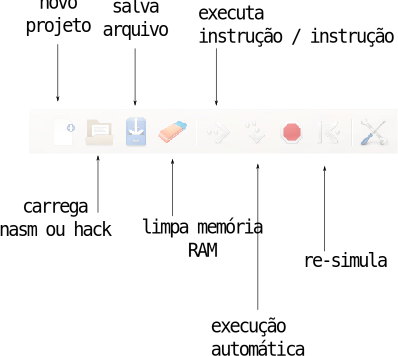
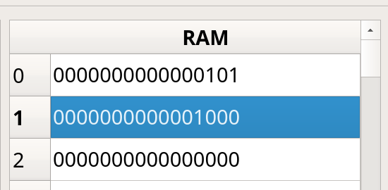

Lab 11: Assembly¶
Ao final desse lab você deve ser capaz de:
- Usar o simulador gráfico
- Fazer pequenas modificações em um código assembly
- Executar script de teste do projeto F - Assembly
Antes de começar
Toda vez que um novo projeto começar será necessário realizar algumas configurações no repositório do grupo, vocês devem seguir para o documento: Util/Começando novo Projeto e depois voltar para esse lab.
- Não seguir sem realizar a etapa anterior.
- Atualizem o Z01-Tools! submodule antes de começar (TODOS DEVEM FAZER)
(realizar em dupla/ individual)
Simulador¶
Nosso código assembly pode ser executado em hardware de verdade (FPGA) porém nesse primeiro momento iremos trabalhar em um ambiente simulado que nos dará maior facilidade de programação e depuração.
Um pouco de contexto: O livro texto (The Elements Of Computer System) disponibiliza um simulador da CPU original todo escrito em java, esse código é fechado e não permite nenhuma customização. Em 2017 o Prof. Luciano Pereiro iniciou a criação de um simulador Z0 (versão anterior) também em Java, onde teríamos controle total do software, o simulador funcionava. Percebemos alguns pontos negativos de utilizar um simulador em Java sendo o principal: Qualquer alteração no Hardware iria demandar uma alteração no simulador, sendo necessário mantermos dois projetos independentes e sincronizados.
Nesse curso, iremos utilizar um simulador que utiliza o nosso próprio código VHDL como descrição da CPU (e de tudo envolvido), uma alteração no hardware (VHDL) irá automaticamente alterar o simulador e o comportamento do computador. Para isso, fazemos uso do ModelSim, um software da Mentor Graphics que executa simulaçòes em VHDL (o mesmo utilizado nos projetos anterios), desenvolvemos uma série de APIs e configurações desse simulador para funcionar para a disciplina.
As APIS de interface do simulador foram desenvolvidas por mim (vhdl/ tcl/ python) e a interface gráfica pelo Prof. Eduardo Marossi (python/ qt5).
De uma olhada na pasta Z01-Tools na sua home, está tudo lá!
O simulador possui a estrutura ilustrada a seguir:

O simulador possui como entradas (para cada simulação): a arquitetura do computador (hardware); o conteúdo da memória RAMl o conteúdo da memória ROM e um tempo de execução.
Após o término da simulação é exportado diversos sinais internos da CPU, o estado final da memória RAM e ROM. Esses sinais são então lidos pela interface gráfica e exibida de uma forma amigável.
Arquivos¶
O simulador está localizado nas pastas Z01-tools/ :
Z01-Simulator-GUI: Parte gráfica do simuladorZ01-Simulator-RTL: Hardware a ser executado no modelsim para executar o programa.
Para inicializar o simulador basta executar o script localizado na pasta do projeto E:
.EE-Assembly/Z01simulador.py
EInterface do Simulador¶
O simulador possui a interface a seguir, onde a coluna da esquerda é referente a memória ROM (programa), a coluna da direita referente a memória RAM (dados).

Toda vez que houver uma alteração em algum dos parâmetros do simulador (RAM/ROM/Instruções,...) o programa será novamente executado no simulador para obtermos um resultado atualizado. Isso pode dar a sensação de "lerdeza" mas lembre da complexidade do sistema: estamos executando um programa em um hardware inteiramente simulado no computador de vocês.

Programando¶
Abra o simulador e insira o seguinte código nasm (na parte referente a ROM), uma instrução por linha:
leaw $1,%A ; carrega a constant 1 em %A
movw (%A),%D ; move o valor da RAM[%A] para %D
leaw $0,%A ; carrega a constant 0 em %A
addw (%A), %D, %D ; faz RAM[%A] + %D e salva em %D
leaw $2, %A ; carrega a constant 2 em %A
movw %D, (%A) ; copia o valor de %D para RAM[%A]
Esse código soma o valor que está salvo na memória RAM endereço 0 com o valor da memória RAM endereço 1 e salva no endereço RAM[2]:
RAM[2] = RAM[0] + RAM[1]
mov
A operação de movw não 'move' o dado de um lugar para outro, ela copia. O valor no destino não é apagado, por exemplo:
leaw $10, %A
movw %A, %D
Ao final dessas operações os registradores %A e %D possui o valor 10.
labels
R0, R1, .., R15, ... são nomes pré definidos de endereços de memória. O R0 indica o endereço de memória 0, R1 o endereço de memória 1 e assim por diante até o R15. O mesmo código pode ser escrito como:
leaw $R1,%A
movw (%A),%D
leaw $R0,%A
addw (%A), %D, %D
leaw $R2, %A
movw %D, (%A)
Para testarmos esse código será necessário colocarmos valores iniciais na memória RAM para validarmos o nosso código, para isso altere a memória RAM como demonstrado a seguir:
- Endereço 0 = 5
- Endereço 1 = 8

Executando
- Com a memória alterada você pode agora executar a simulação
- Verifique se o valor da memória 2 é a soma dos endereços 0 e 1.
- Brinque com esses valores...

Treinando¶
Vamos praticar um pouco agora programar em assembly, no começo parece bem difícil, mas com a prática as coisas vão ficando mais fáceis.
Tip
USE O RESUMO DAS INSTRUÇÕES: AssemblyZ1 para saber as instruções disponíveis.
Tarefa 1
- Altere o código para armazenar o resultado no endereço RAM[5]
solução
leaw $1,%A
movw (%A),%D
leaw $0,%A
addw (%A), %D, %D
leaw $5, %A ; <- alterado essa linha para 5!
movw %D, (%A)
Tarefa 2
- Altere o código para armazenar o negativo da operação entre RAM[0] + RAM[1] no endereço RAM[5] (dica: tem uma operação de
NEG).
solução
leaw $1,%A
movw (%A),%D
leaw $0,%A
addw (%A), %D, %D
negw %D ; aqui eu faço %D = - %D
leaw $5, %A
movw %D, (%A)
Script automático de testes¶
Além da interface gráfica do simulador, possuímos um script de teste automatizado (similar ao do VHDL), esse script: E-Assembly/testeAssembly.py compila os códigos que estão na pasta E-Assembly/src/ para a pasta E-Assembly/bin/hack e executa os testes localizados em E-Assembly/tst/. Somente os arquivos configurados no config.txt serão testados.
config.txt¶
O arquivo de configuração dos testes é um pouco diferente, possui além do nome do módulo que será testado um segundo parâmetro que indica quantos testes serão executados para esse módulo e quantos microsegundos ele ficará na simulação (microsegundos suposto de um sistema real).
Exemplo do config.txt
# nome | quantidade de testes | us de execucao
#add 1 1000
Tarefa
- Abra o arquivo
config.txte remova o comentário do módulo add
Implementando o add.nasm¶
Os arquivos a serem implementando estão na pasta E-Assembly/src/ lá você vai encontrar todos os códigos fontes que deverão ser feitos nesse projeto.
Tarefa
Edite o arquivo add.nasm realizando a implementação que ele pede no comentário do arquivo (já foi feito nesse lab)
vscode
Abra o arquivo add.nasm no VsCode.
Agora com o módulo implementando podemos testar seu funcionamento. Para isso execute o script testeAssembly.py. Esse script irá compilar o nasm e gerar os arquivos .hack e .mif (salvos no /bin/hack/) que serão carregados no simulador junto com uma configuração inicial da memória RAM (como no gui do simulador), ao término da simulação um arquivo com o estado final da RAM é salvo na pasta /tests/tst/add/add0_end.mif.
Executamos um script que compara o estado final da RAM com o um esperado (add0_tst.mif), em caso de algum erro, o scripr irá reportar falha.
Se tudo ocorrer bem você deverá ter a seguinte saída :
- Testando ....
-------------------------
Starting add0 ....
pass add0
==== Summary ===================================
+ pass add teste: 0
Implementando outros módulos¶
Vamos implementar outros módulos: sub.nasm e mov.nasm. Para cada módulo descomente o teste no config.txt e leia o que deve ser feito nos comentários de cada arquivo.
Tarefa
- Implementar o
sub.nasme testar - Implementar o
mov.nasme testar